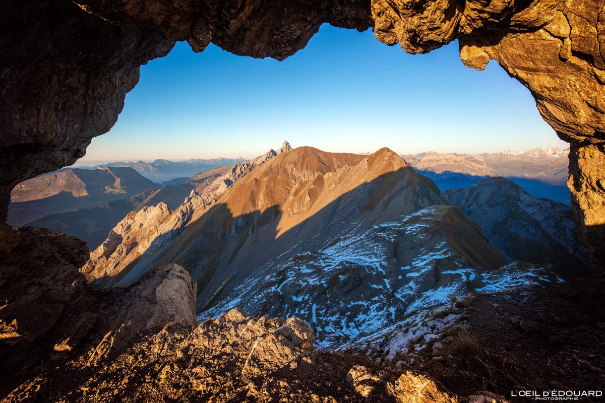

Description
Le Trou de la Mouche est une randonnée spectaculaire située dans le massif des Aravis, offrant des vues imprenables sur les Alpes françaises. Cette randonnée difficile mène à un passage rocheux unique en forme de trou, d'où le nom "Trou de la Mouche".
Détails de la randonnée
- Durée : 6-7 heures
- Distance : 12 km
- Dénivelé positif : 1100 m
- Altitude max : 2453 m
- Point de départ : Parking de l'Étale, La Clusaz
Itinéraire
- Départ du parking de l'Étale à La Clusaz
- Suivre le sentier balisé en direction du Col des Annes
- Au Col des Annes, prendre à droite vers le Trou de la Mouche
- Montée progressive sur un sentier rocailleux
- Passage technique avant d'atteindre le Trou de la Mouche
- Retour par le même itinéraire
Conseils
- Prévoir de bonnes chaussures de randonnée
- Emporter suffisamment d'eau et de nourriture
- Vérifier la météo avant de partir, éviter par temps orageux
- Partir tôt le matin pour éviter la chaleur
- Être en bonne condition physique, la randonnée est exigeante
Carte